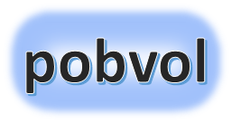
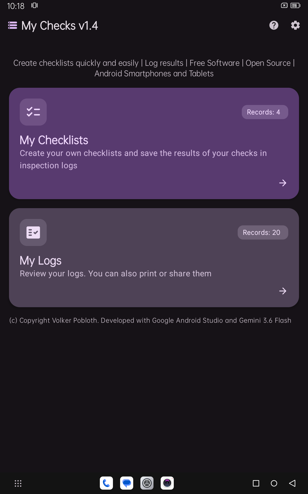
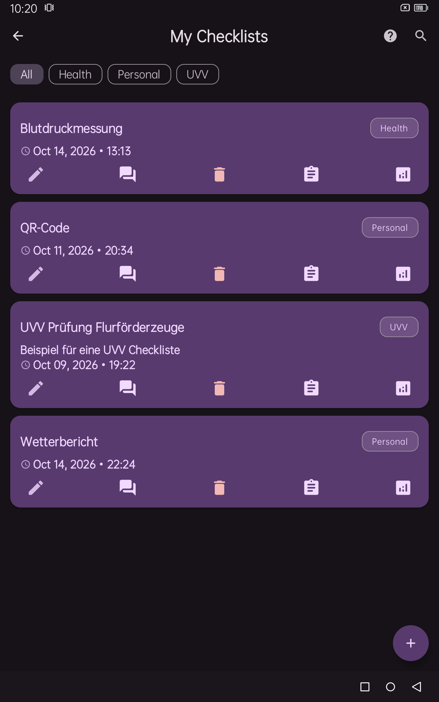
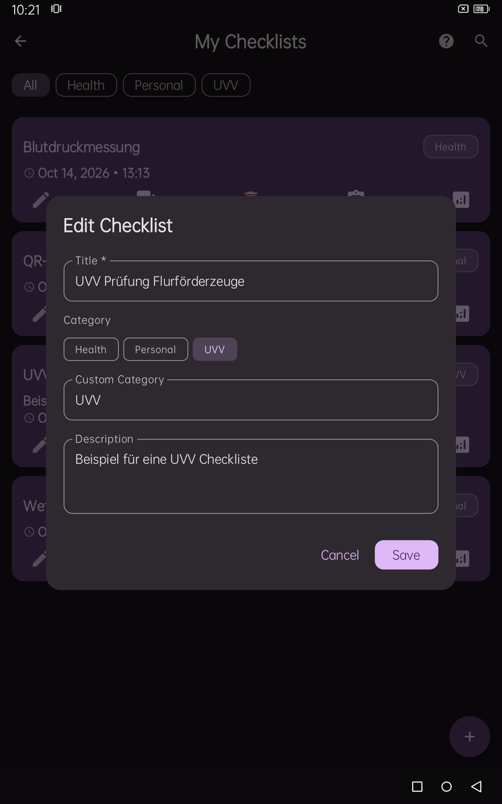
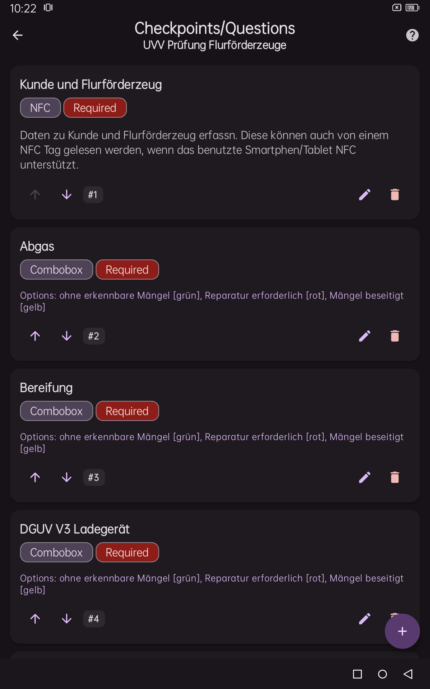
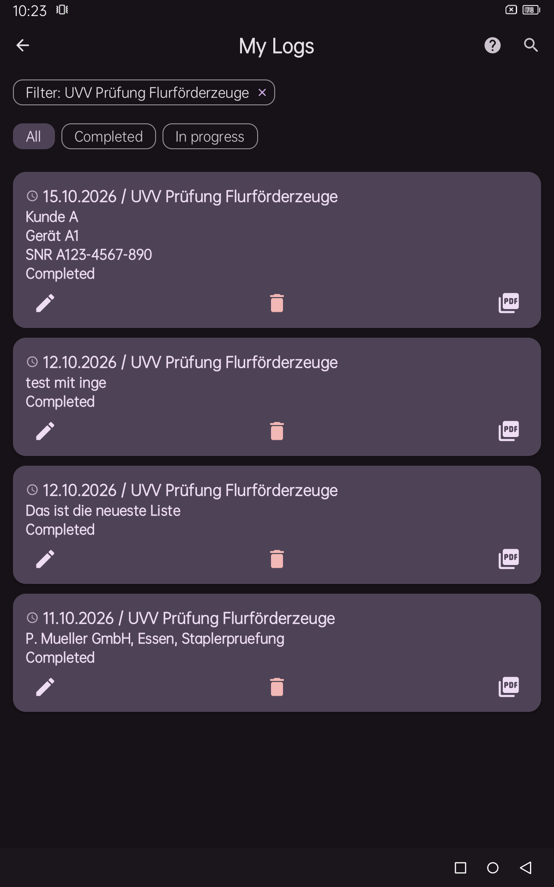
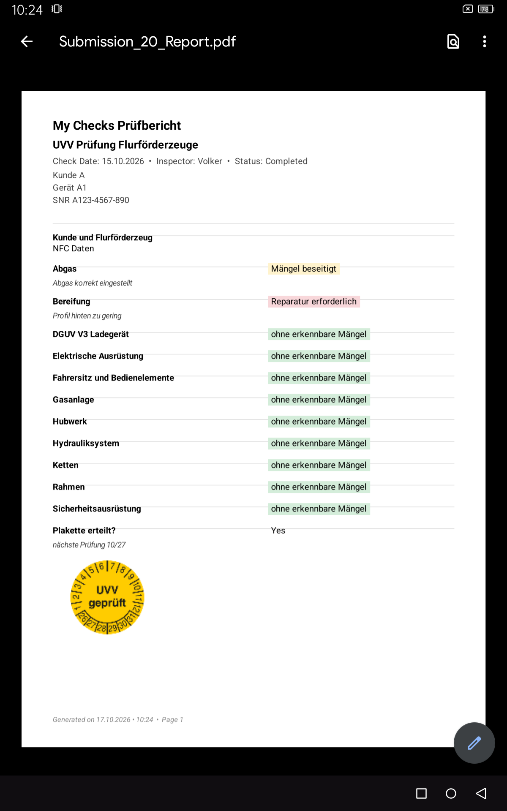
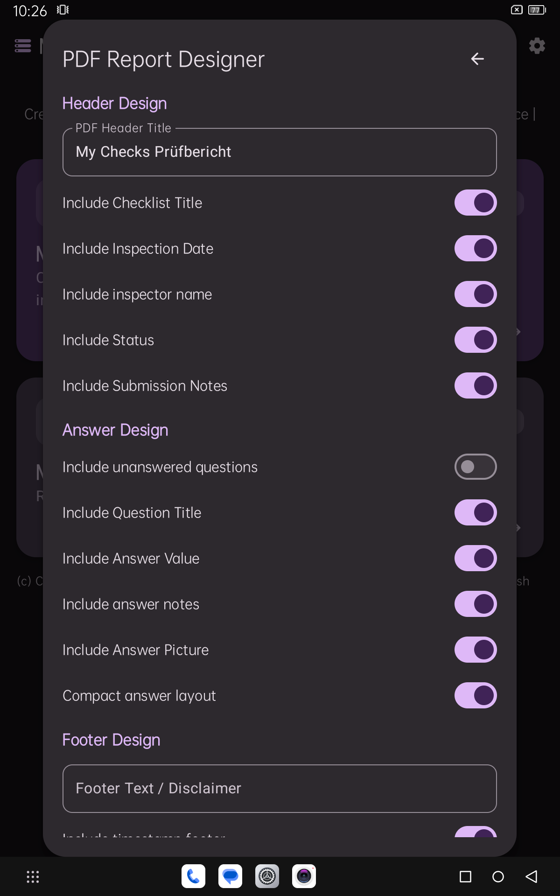
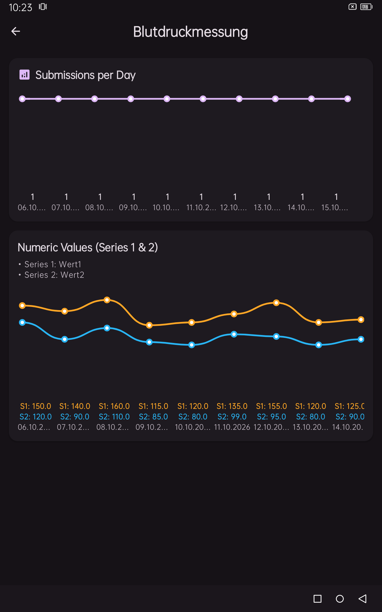

With the Android app pobvol My Checks, you can easily and quickly create custom checklists with checkpoints and questions, and then record, analyze, and output the results of inspections and other activities in PDF reports. All captured data is automatically backed up in SQL files. Data structures do not need to be programmed in databases with great effort. German, English, Spanish, and French are supported.
🔗 Screenshots
🔗 Dashboard & Navigation
🔗 Settings
🔗 My Checklists
🔗 Checkpoints / Questions
🔗 Performing Inspections & Recording Results
🔗 My Logs & PDF and SQL Export
🔗 Data Security & Export
🔗 Technology / Architecture
🔗 © Copyright
Top ↑








Top ↑
The dashboard is your starting point. Use the cards to navigate to your checklists and logs, and access settings and help via the top bar. With the menu icon in the upper left corner, you can view the license agreement, manage your own text blocks, back up the database, import backups of the database again and close the app.
Top ↑
In the dashboard, click on the gear icon (⚙). The "General Settings" dialog will open. Customize the appearance, preferred language, and categories to suit your needs. Enter your name in the examiner field. Your name will then be transferred to the log and the PDF.
Top ↑
Tap the "My Checklists" card on the dashboard to open this screen.
Add Checklist: Create new checklists quickly. Tap the **`+`** button in the bottom right corner to open the "Add Checklist" dialog. Enter a title, assign a category, and optionally provide a short description. Tap "Add" to save your new checklist, creating it and displaying it in the overview.
Search Checklists: Tap the search icon (🔍) in the top bar to find checklists by title, description, or category.
Filter by Category: Filter the list by tapping a category (Health, UVV, etc.). Tap All to clear the filter.
Edit Checklist: Tap the edit icon (✏️) on a checklist card to open "Edit Checklist". Here you can adjust title, category, and description.
Checkpoints / Questions: Tap the question icon (💬) on a checklist card to open the "Checkpoints/Questions" screen. Here you manage checkpoints and questions for the selected checklist.
Delete Checklist: Tap the delete icon (🗑️) to open a confirmation window. Deleting a checklist automatically deletes its questions. Please note: Checklists with recorded logs cannot be deleted.
Add Inspection: Tap a checklist card to start recording a new inspection. The "Fill Checklist" form opens.
Show chart: In a checklist card, tap the chart icon (📋), opens the chart screen.
This shows in a first chart how many test reports were recorded per day. If the
checklist contains a number question, a second chart shows the curve for the first
number value. If the checklist contains two number questions, a third chart shows the
curve for the first two number values.
View Inspection Logs: Tap the log icon (📋) on a checklist card to open "My Logs"
for that checklist.
Top ↑
On this screen, you manage the checkpoints/questions of a checklist. The app supports
the following response types: text, number, checkbox, simple picklist, Multiple
selection list, NFC and QR code.
- Text: Flexible text input
- Number: Input of numeric values. You can set a minimum and a Maximum value.
These must then not be under- or exceeded when entering.
- Checkbox: Yes/No toggle
- Selection list: Possible options must be entered separated by commas. An option
is then selected when filling out the checklist. You can also choose background colors
(green, yellow or red) by inserting color tags in parentheses, such as without
recognizable defects [green], repair required [red] or defects eliminated [yellow]. In
the PDF Export will display the selected option with a highlighted background box
printed.
- Multiple selection: Possible options must be entered separated by commas. One
or more several options are then selected when filling out the checklist. You can also
Specify background colors (green, yellow, or red) by adding color tags in parentheses,
such as for example, options 1 [green], option 2 [red] or option 3 [yellow]. In the PDF
export, the selected option with a highlighted background box.
- NFC: Read physical NFC tags and transfer the data
- QR code: Scan QR codes with the camera and add the value contained to the
Accept answer field.
Add checkpoint/question: Just click on the **'+'** button in the lower right
corner. The dialog "Add checkpoint/question" opens. In the Title field, enter a name for
your new checkpoint/question and arrange a response type. Depending on the type of
answer, further information is required or possible. If you like, enter a short
description. You can also enter the sorting number, but the app will do this
automatically for you. New checkpoints/questions are automatically marked as required.
Change them Attitude if the question does not necessarily need to be answered. With the
"Save" button, your entries will be saved and stored in the overview displayed.
Adjust order: The sort number is displayed for each entry (e.g., #1, #2). This
controls the position in the list. Use the Up (↑)/Down arrows(↓) to adjust the order of
the questions. A change causes the sort numbers of other entries to be automatically
adjusted.
Edit checkpoint/question: Tap the Change icon (✏️), the "Edit
Checkpoint/Question" dialog opens. Here you can select the title, the description, the
sort number, the response type. Of course, you can also whether the entry is required or
optional.
Delete checkpoint/question: Tap the delete icon (🗑️), a window opens in which you
have to confirm the deletion.
Top ↑
Click on the "My Checklists" card in the dashboard and open the corresponding screen.
Click on a checklist card to start the Recording an exam.
The form "Fill out checklist" opens.
- Reviewer: The reviewer name has been automatically filled in from the settings.
You can change it.
- Inspection date: The date has been preset with the current date (currently
fixed dd.MM.yyyyy). You can change this.
- Status: The status has been preset to "in progress". At the moment, you can set
the Status. But that will be turned off.
- Notes: If you like, you can add additional information about the exam in the
notes. Use this option, as the notes are displayed in the log overview. This makes it
easier for you to find an exam.
- Checkpoints/Questions: Now answer all the required checklist questions. You can
save the edit at any time and continue later. Use the Save button in the header area of
the form. In addition, you will find a save button also at the end of the list. If not
all the necessary questions have been answered, the status is preset with "in progress".
If all required checkpoints/questions have been answered, the status is automatically
changed to "Completed" when saving.
- NFC Tags: For NFC questions, tap the NFC button and hold a NFC tag on the back
of your device so that it can be scanned. When everything has worked, the data has been
transferred to the answer field. Please note that this on your device.
- QR codes: For QR code questions, tap on the "Scan QR code" button. So the
camera scanner opens and you can record the code. If everything went well, the data has
been transferred to the answer field. Please note that the app Camera permissions
required.
- PDF and SQL files: PDF and SQL files are automatically created for fully
completed checklists as soon as all data were collected. The status is automatically set
to "Completed". A PDF file will be saved in the Download/pobvolMyChecks/pdf folder. An
SQL file is stored in the Download/pobvolMyChecks/sql folder. For each SQL file, an
additional file with the corresponding checksum is stored.
Top ↑
Click on the "My Logs" card in the dashboard and open the corresponding screen.
View recorded logs, filter the list, edit your answers and create your A4 PDF report
immediately.
Settings: If you click on the gear icon (⚙), the "PDF Report Designer" dialog
opens. Customize the layout of the PDF reports (header, footer, page breaks, date and
status display).
Find logs: Tap the search icon (🔍) in the top bar to Find minutes by date, title
or notes.
Filter checklists by status: Filter the list by tapping a status (Completed, In
Progress). Clicking All removes the filter.
Edit log: In a map, tap the Change icon (✏️), opens the "Edit Protocol" window
and you can adjust your entries.
Delete log: Tap on the delete icon (🗑️) in a card, opens a window in which you
have to confirm the deletion. Deleting a log deletes all related responses.
View PDF: Tap the PDF icon in a map, a PDF viewer will open and displays the
generated PDF. You can then print or share it.
Top ↑
Data is only stored on your device. Your personal settings are stored in a secure area
of
the app (/data/data/com.pobvol.mychecks/shared_prefs). Categories, text modules,
checklists, checkpoints/questions, exam data and answers are stored in a local Android
SQLite database. This is also located in the secure area of the app
(/data/data/com.pobvol.mychecks/databases).
Data backup and data export: You can create a backup copy of the database at any
time via the start screen (menu item "Back up database)". The app automatically creates
PDF and SQL files as soon as a check is completed. Database copies, PDF and SQL files
can be found in the download folder, subfolder pobvolMyChecks. In this subfolder,
the exported data is then stored in the dbbackup, pdf and sql folders.
You can copy this data to a PC or other device and back it up.
The app itself does not transfer any data to the cloud or to third-party servers.
Top ↑
- Language: Kotlin
- UI Framework: Jetpack Compose & Material 3 (with Edge-to-Edge support)
- Database: Room Persistence Library (SQLite)
- Document Generation: Android `PdfDocument` API (A4 vector rendering)
- Image Processing: Coil Compose
- Permissions & Hardware: Camera contracts, NFC foreground dispatch, and Scoped Storage MediaStore APIs
- Supported Devices: Android Smartphones and Tablets
- Supported Languages: German, English, Spanish, and French
Top ↑
The app pobvol My Checks is Free Software☯,
delivered as open source.
Source code is uploaded to GitHub☯.
You can download, install, operate, modify, and redistribute this software under the
terms of the GNU General Public License v3☯.
Copyright © 2026 Volker Pobloth, pobvol Software Services.
Developed with Google Android Studio and Gemini 3.5 Flash Lite and Gemini 3.6 Flash
The App is provided in the hope that it will be useful,
but WITHOUT WARRANTY OF ANY KIND;
even without the implied warranty of MERCHANTABILITY or FITNESS FOR A PARTICULAR
PURPOSE.
The content of linked sites is always the responsibility of the respective provider or
operator of the sites.
External links are marked with this symbol: ☯